227,698 transfer functions.
A PSIM digital twin extracts small-signal H(jω) while sweeping six aging components across ±20% of nominal.
A self-supervised deep learning framework that reads frequency-response signatures to catch parametric degradation before failure.
Ignacio Martin-Salinas
Jose A. Belloch
Cristina Fernandez
Grant PID2024-162157OB-I00 funded by MICIU/AEI/10.13039/501100011033 and by ERDF/EU.
Context
The gap
Parametric drift migrates poles and zeros — a scalar alarm cannot see it.
Near its operating point a switching converter is a closed-loop LTI system. Component aging perturbs the state matrices (A, B, C, D), reshaping the small-signal transfer function across decades of frequency.
Reading the full Bode response H(jω) exposes capacitor aging, MOSFET on-resistance wear and ESR growth long before any single-point limit is crossed.
Non-linear coupling. A ±10% ESR change reshapes magnitude and phase across decades — not a monotone offset a fixed limit can bound.
High dimensionality. Each health state is a 202-D vector (101 magnitude + 101 phase points); hand-tuned per-point limits do not scale.
Label scarcity. Field faults are rare and unlabeled, so the detector must be trained on healthy data only — self-supervised, one-class.
Edge budget. Inference must run in real time beside the converter, within a few watts and sub-millisecond latency.
Our answer. Contrastive representation learning (CARLA) for sensitivity, TensorRT kernel fusion for μs-scale deployment.
Framework at a glance
A PSIM digital twin extracts small-signal H(jω) while sweeping six aging components across ±20% of nominal.
Convolutional, recurrent, attentional and variational encoders under one BaseAutoencoder contract z = fenc(x), x̂ = fdec(z).
Physics-consistent synthetic anomalies as negatives; NT-Xent on a unit-sphere projection separates health from degradation.
TensorRT FP16 kernel fusion → 0.499 ms at batch-1 while preserving ROC-AUC = 0.985.
Dataset split 70% train / 15% validation / 15% test — released alongside the PSIM configuration files on publication.
Converter under study
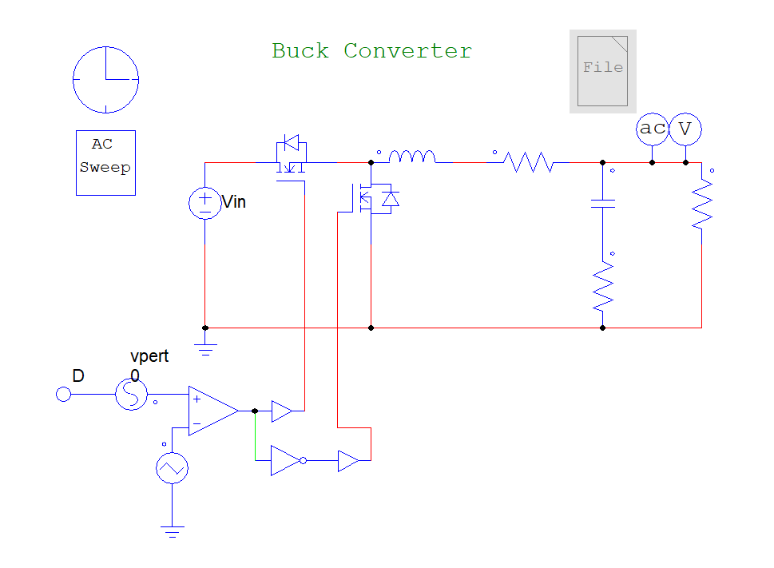
Nominal operating point
| Input voltage Vin | 50 V |
| Load Rout | 4 Ω |
| Inductor Lout | 0.2 mH |
| Output capacitor Cout | 100 µF |
| Switch on-resistance Rds,1, Rds,2 | 10 mΩ |
| Inductor ESR | 0.1 Ω |
| Capacitor ESR | 20 mΩ |
| Duty cycle D | 0.4 |
| Switching frequency fsw | 100 kHz |
| AC sweep range | 100 Hz – 50 kHz |
Six critical components are perturbed to emulate parametric aging: Cout, L, Rds,1, Rds,2, ESRC, ESRL.
Health as a fingerprint
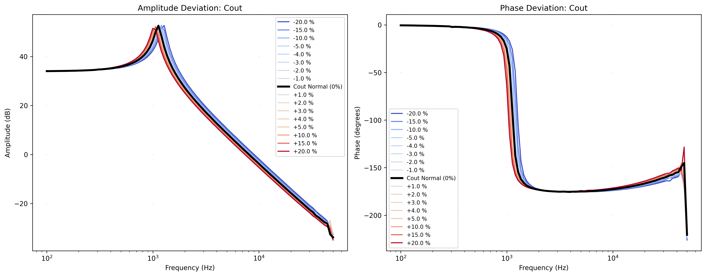
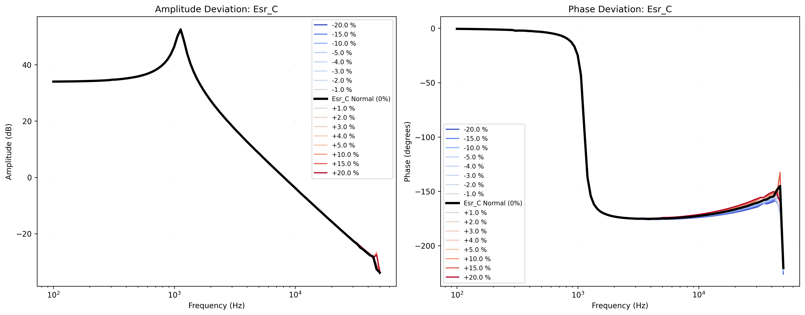
Each response is 101 log-spaced points of amplitude (dB) and phase (°). Black = nominal; blue → red span the [−20%, +20%] deviation range. Strong vs. subtle signatures motivate a learned detector over hand-tuned thresholds.
Data generation
A low-amplitude AC source linearizes the switching converter around its duty-cycle operating point — each perturbed netlist yields one labeled transfer function, no destructive hardware testing.
Each netlist defines a state-space system (A, B, C, D); AC analysis evaluates H(jω) at the operating point D = 0.4, fsw = 100 kHz.
Six aging components (Cout, L, Rds,1, Rds,2, ESRC, ESRL) swept over ±20% around nominal.
101 log-spaced points over 100 Hz – 50 kHz resolve the LC resonance and the ESR-dominated high-frequency tail.
Magnitude (dB) and phase (°) stacked into a (101×2) tensor, tagged normal or anomalous by deviation band.
The digital twin turns one Buck schematic into a reproducible, physically-grounded fault library spanning 227,698 states.
Dataset & labeling
Labeling strategy
| State | Deviation range | Step |
|---|---|---|
| Normal | [−5%, +5%] | 1% |
| Anomalous | [−20%, −5%) and (+5%, +20%] | 5% |
Architectural inductive biases
Local Conv1D kernels (size 5) capture resonance structure at O(N) cost; the MLP is a fully-connected baseline.
Hidden state propagates along the frequency axis to model roll-off and gradual parametric drift.
Latent z ∼ N(μ, σ2I) with KL regularization; multi-head self-attention for O(N2) global spectral coupling.
Keras Tuner searches latent dim, kernel size, activation (GELU/Swish/Mish) and optimizer (AdamW/Lion) under warmup-cosine decay and early stopping.
All six share the encoder–decoder contract z = fenc(x), x̂ = fdec(z), trained by MSE reconstruction and ranked by held-out ROC-AUC. Built on Keras / TensorFlow.
Inside the encoder–decoder contract
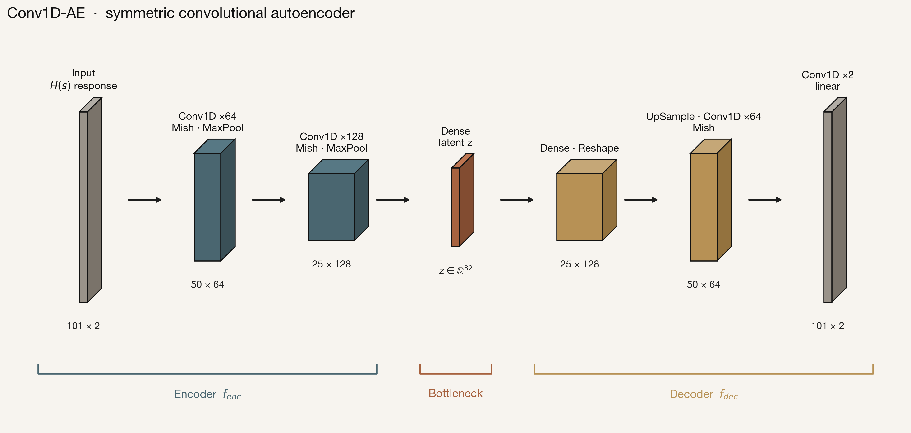
One contract, distinct inductive biases
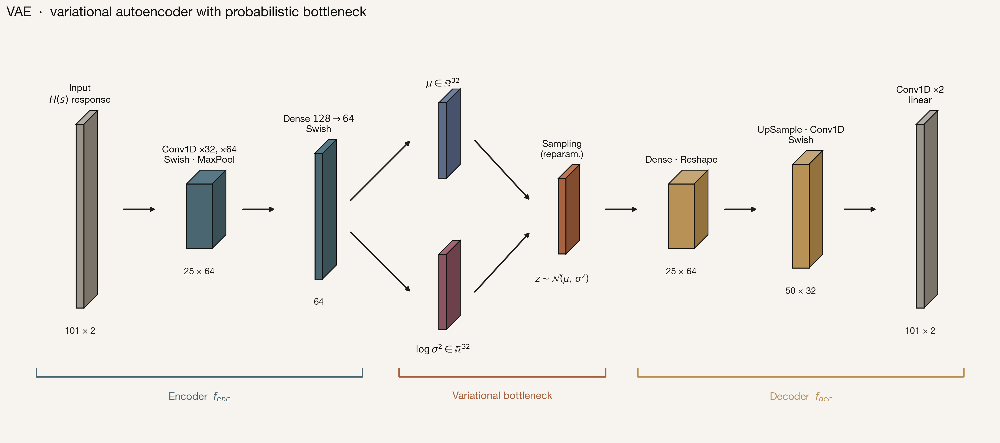
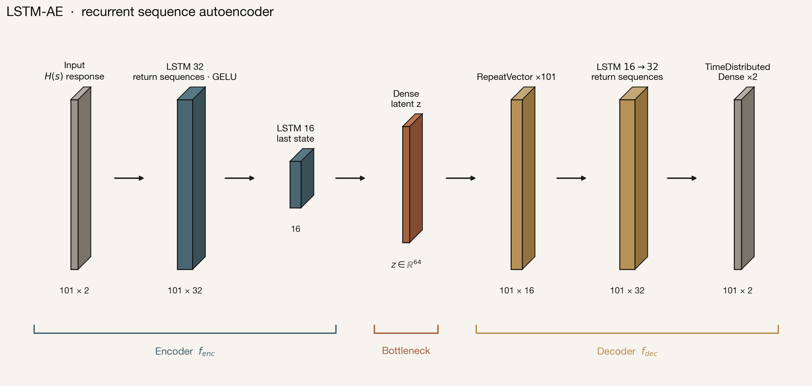
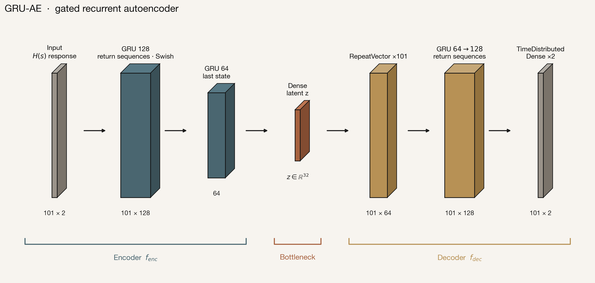
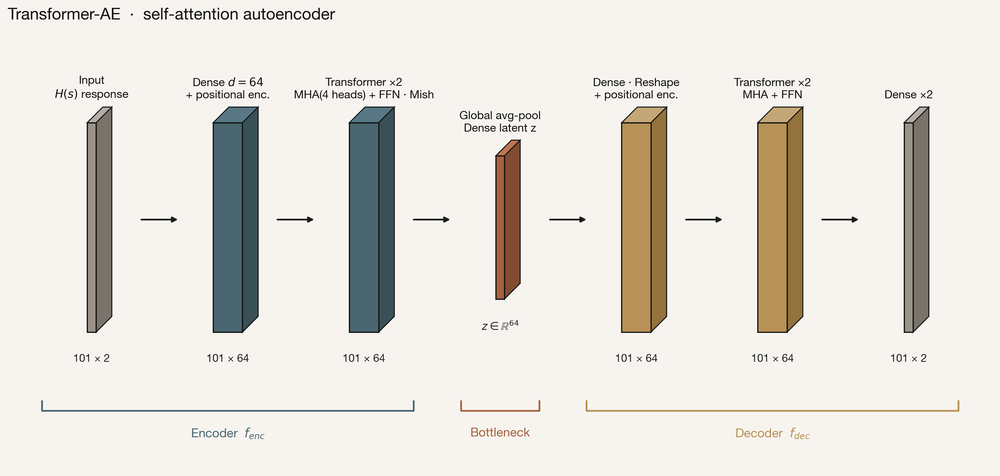
Self-supervised contrastive learning
NT-Xent objective
Maximally separate healthy and degraded states in latent space.
Objectives, scoring & search
Reconstruction objective (MSE)
Lrecon = 1N Σi=1N ‖ xi − x̂i ‖2Per-sample anomaly score
s(x) = 1L·F Σt,f ( xt,f − x̂t,f )2CARLA score — k-NN distance in latent space
sCARLA(x) = 1k Σj ∈ Nk(x) ‖ z(x) − zj ‖VAE objective — negative ELBO
LVAE = Lrecon + β DKL( q(z|x) ‖ N(0, I) )Threshold calibration (normal errors only)
τ = P95 { s(x) : y = normal } τ = μN + 3 σN (std method)Decision rule
ŷ(x) = 𝟙[ s(x) > τ ]Bayesian hyperparameter search
θ* = argmaxθ ∈ Θ AUC(θ) αEI(θ) = 𝔼[ max( f(θ) − f(θ+), 0 ) ]Reconstruction models score by MSE; CARLA scores by k-NN distance in the projection space. Every threshold is calibrated on healthy data only — no anomaly labels required at deployment.
Evaluation protocol
Operating-point metrics
Precision = TPTP + FP Recall = TPTP + FN F1 = 2 · Precision · RecallPrecision + Recall Accuracy = TP + TNTP + TN + FP + FN Separability = μanom − μnorm1 + σnormTP / FP / TN / FN from the calibrated decision ŷ(x) = 𝟙[ s(x) > τ ]. All computed with scikit-learn on the held-out test set.
Threshold-free ranking
ROC-AUC = ∫01 TPR d(FPR) PR-AUC = ∫01 Precision d(Recall)Threshold calibration — healthy data only
AUCs are threshold-independent, so they expose true ranking even when a fixed operating point fails to transfer — the key diagnostic for the quantization results ahead.
Model comparison
| Architecture | Acc. | Prec. | Rec. | F1 | AUC |
|---|---|---|---|---|---|
| Conv1D-AE (optimal) | 0.957 | 0.976 | 0.950 | 0.963 | 0.984 |
| LSTM-AE | 0.907 | 0.972 | 0.866 | 0.916 | 0.955 |
| Transformer-AE | 0.888 | 0.995 | 0.813 | 0.895 | 0.880 |
| VAE | 0.853 | 0.919 | 0.824 | 0.869 | 0.923 |
| CARLA (base) | 0.777 | 0.769 | 0.889 | 0.825 | 0.831 |
| MLP-AE | 0.722 | 0.956 | 0.555 | 0.702 | 0.657 |
| GRU-AE | 0.607 | 0.845 | 0.407 | 0.550 | 0.505 |
Conv1D-AE is selected for intensive edge-deployment benchmarking.
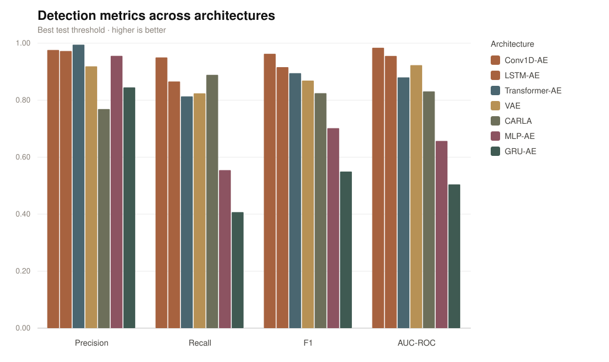
Training dynamics
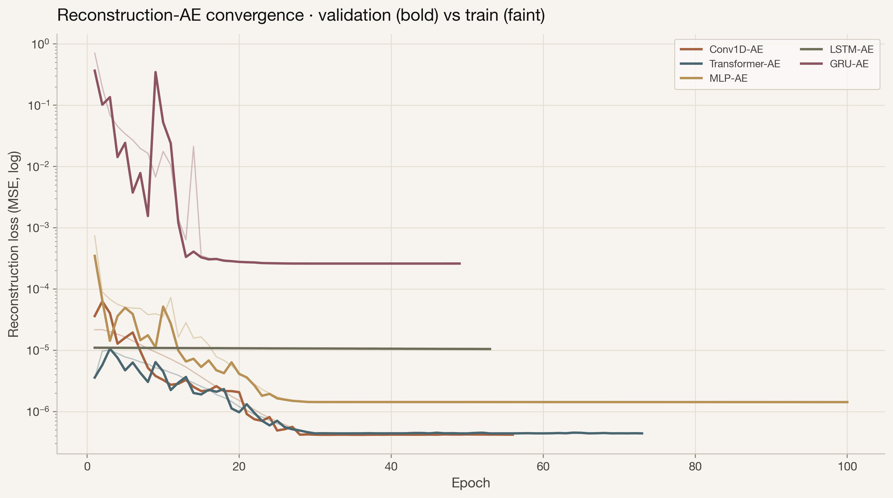
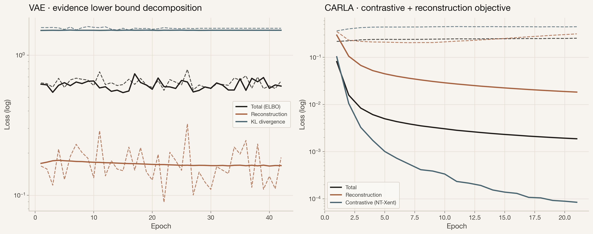
Shared AdamW + warmup–cosine schedule with early stopping across all runs; only the architectural inductive bias differs.
Physical interpretability
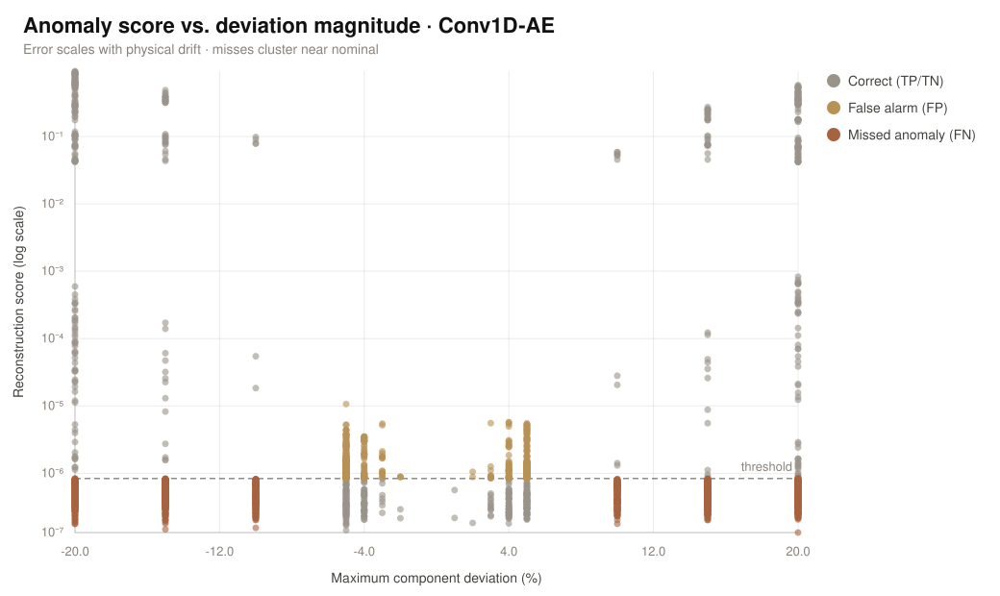
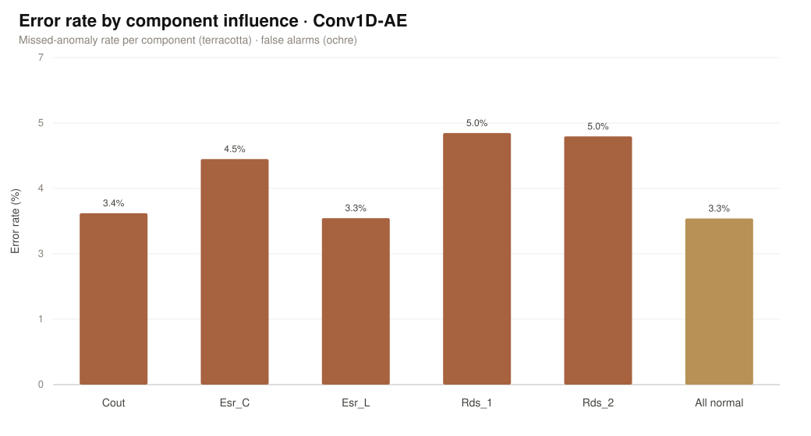
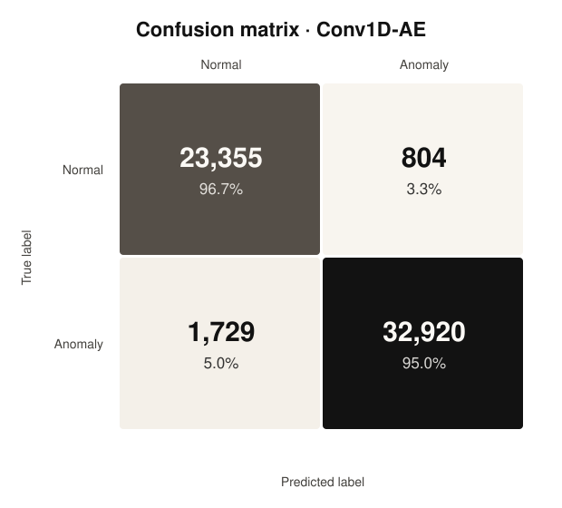
High-performance edge deployment
Every export path is benchmarked on one machine — isolating compiler-level optimisation from raw hardware acceleration.
CPU and GPU reference runtimes.
FP16, Dynamic-range and INT8 quantisation.
Cross-platform CPU execution.
FP32, FP16 and INT8 GPU engines.
Unified testbed
RTX 4070 + Ryzen 7 5800X.
Ada Lovelace, 12 GB VRAM, 5888 CUDA cores, 4th-gen Tensor Cores.
AMD Ryzen 7 5800X, 8 physical / 16 logical cores at 3.8 GHz.
Conv1D-AE — chosen for its fast O(N) inference complexity.
Timing methodology
Measurement protocol
time.perf_counter() wall-clock; report mean ± std, min / max.Uniform evaluation protocol
| Backend | Batch | Device |
|---|---|---|
| Keras FP32 | 1 | CPU / GPU |
| TFLite FP16 / Dyn / INT8 | 1 | CPU (edge) |
| ONNX Runtime | 1 | CPU |
| TensorRT FP32 / FP16 / INT8 | 1 | GPU |
Every backend — from edge TFLite to the batch-1 TensorRT engines — is timed single-sample (n=1) under the same warm-up and timed-run budget, so per-sample latencies are directly comparable. Classification metrics (accuracy, F1, ROC-AUC) are recomputed in the same pass, so speed and fidelity come from one measurement.
One protocol on the unified testbed: single-sample (n=1) timing — 15 warm-up + 150 timed runs, mean ± std with peak RAM / VRAM — wall-clock throughout.
Hardware resource profiling
| Format | Latency / sample (ms) |
|---|---|
| Keras FP32 (CPU) | 0.121 |
| Keras FP32 (GPU baseline) | 0.0408 |
| TFLite FP16 | 0.155 |
| TFLite Dynamic | 0.146 |
| TFLite INT8 | 0.119 |
| ONNX (CPU) | 0.122 |
| TensorRT FP16 (GPU) | 0.00445 |
| TensorRT FP32 (GPU) | 0.00476 |
| TensorRT INT8 (GPU) | 0.00764 |
Per-sample inference latency, measured consistently across every export format — host runtimes and the batch-1 TensorRT engines alike. Same metric plotted at right (seconds, log scale).
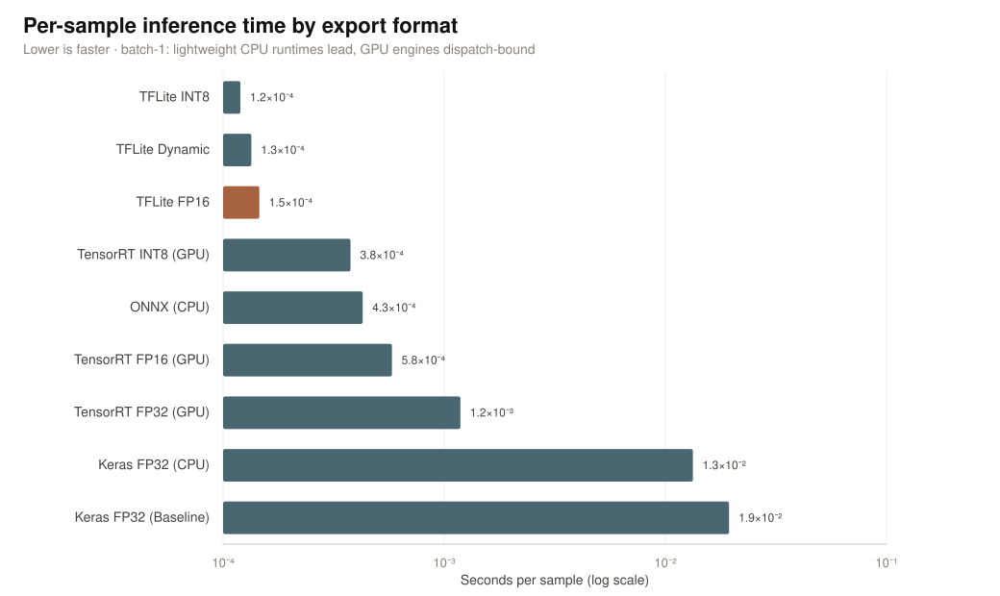
Fidelity vs. optimization
| Format | Size (MB) | Lat./sample (ms) | Acc. | F1 | AUC |
|---|---|---|---|---|---|
| Keras FP32 (baseline) | 3.42 | 0.0408 | 0.9555 | 0.9649 | 0.9851 |
| ONNX (CPU) | 1.13 | 0.1218 | 0.9600 | 0.9683 | 0.9861 |
| TensorRT FP32 (GPU) | 1.45 | 0.0048 | 0.9590 | 0.9675 | 0.9854 |
| TensorRT FP16 (GPU) | 1.44 | 0.0044 | 0.9588 | 0.9673 | 0.9852 |
| TFLite FP16 | 0.58 | 0.1550 | 0.9576 | 0.9665 | 0.9854 |
| TFLite Dynamic | 0.35 | 0.1464 | 0.6371 | 0.7783 | 0.9446 |
| TensorRT INT8 (GPU) | 0.69 | 0.0076 | 0.6371 | 0.7783 | 0.8946 |
| TFLite INT8 | 0.39 | 0.1188 | 0.6371 | 0.7783 | 0.3213 |
Symmetric INT8 maps q = round(x / s), s = max|x| / 127. (1) A fixed Keras threshold does not transfer — INT8/Dynamic collapse to 0.6371 accuracy. (2) AUC exposes true ranking: TFLite INT8 collapses (0.3213); TensorRT INT8 recovers to 0.8946.
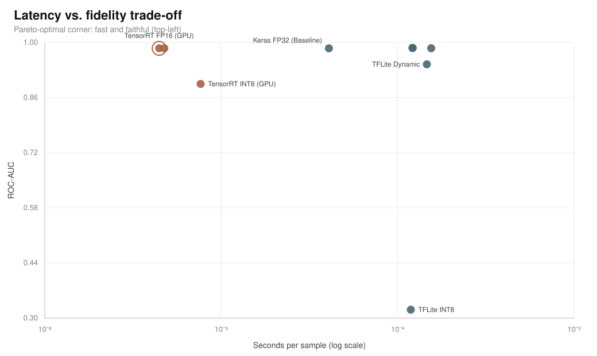
Headline outcome
Recommended target
Bridging contrastive accuracy with strict real-time edge constraints.
TensorRT FP16 is the deployment target: sub-millisecond inference at baseline-level detection quality.
Conclusion & future work
Mamba-style linear-complexity sequences, targeting ~8× speedup over Transformers.
Embed Buck-converter ODEs into the contrastive loss to generalize with less synthetic data.
Extend benchmarks to Watts and Joules-per-inference for thermally constrained systems.
Kolmogorov-Arnold Networks for symbolic extraction and interpretability.
One reproducible loop — physics-based simulation, self-supervised representation learning and hardware-aware compilation — closes the gap between detection accuracy and real-time edge constraints.
Selected references
Ignacio Martin-Salinas · Jose A. Belloch · Cristina Fernandez — Universidad Carlos III de Madrid · CMMSE 2026.
Grant PID2024-162157OB-I00 funded by MICIU/AEI/10.13039/501100011033 and by ERDF/EU.